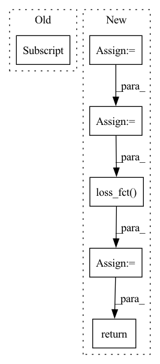

Pattern ID :1084

Before Change
output_b = self.model_b(**b)
outputs = []
for i in range(len(output_a)):
outputs.append(output_a[i] + output_b[i])
return outputs
After Change
b.pop("labels")
output_a = self.model_a(**a)[1] // [bs, seq_len, 768]
output_b = self.model_b(**b)[1]
output = torch.cat([output_a, output_b, output_a-output_b], dim=1)
logits = self.linear(output)
loss = self.loss_fct(logits, labels)
return loss, logits
class SiameseTransformerAdd(nn.Module):
In pattern: SUPERPATTERN
Frequency: 3
Non-data size: 6
Instances
Fragment ID: 5530020
Project Name: prajjwal1/fluence
Commit Name: 384e5722f994d3a39d54cf057a0a48a996206bbf
Time: 2020-08-03
Author: prajjwalin@protonmail.com
File Name: fluence/models/siamese_model.py
M Class Name: SiameseTransformer
N Class Name: SiameseTransformer
M Method Name: forward(3)
N Method Name: forward(3)
M Parent Class: nn.Module
N Parent Class: nn.Module
M File Name: fluence/models/siamese_model.py
N File Name: fluence/models/siamese_model.py
M Start Line: 22
M End Line: 28
N Start Line: 24
N End Line: 32
'>
Before Change
return score
def calculate_loss(self, interaction):
user = interaction[self.USER_ID]
item_seq = interaction[self.ITEM_SEQ]
item_seq_len = interaction[self.ITEM_SEQ_LEN]
pos_items = interaction[self.POS_ITEM_ID]
neg_items = interaction[self.NEG_ITEM_ID]
After Change
loss = self.loss_fct(pos_score, neg_score)
return loss
else: // self.loss_type = "CE"
test_item_emb = self.item_embedding.weight
logits = torch.matmul(seq_output, test_item_emb.transpose(0, 1))
loss = self.loss_fct(logits, pos_items)
return loss
def predict(self, interaction):
user = interaction[self.USER_ID]
'>
Fragment ID: 5530016
Project Name: rucaibox/recbole
Commit Name: 47acab037a10d459ab079f727a6cba12405fc6c4
Time: 2022-08-15
Author: xulanling_sherry@163.com
File Name: recbole/model/sequential_recommender/fpmc.py
M Class Name: FPMC
N Class Name: FPMC
M Method Name: calculate_loss(2)
N Method Name: calculate_loss(2)
M Parent Class: SequentialRecommender
N Parent Class: SequentialRecommender
M File Name: recbole/model/sequential_recommender/fpmc.py
N File Name: recbole/model/sequential_recommender/fpmc.py
M Start Line: 97
M End Line: 106
N Start Line: 104
N End Line: 120
'>
Before Change
return score
def calculate_loss(self, interaction):
user = interaction[self.USER_ID]
item_seq = interaction[self.ITEM_SEQ]
item_seq_len = interaction[self.ITEM_SEQ_LEN]
pos_items = interaction[self.POS_ITEM_ID]
neg_items = interaction[self.NEG_ITEM_ID]
After Change
loss = self.loss_fct(pos_score, neg_score)
return loss
else: // self.loss_type = "CE"
test_item_emb = self.item_embedding.weight
logits = torch.matmul(seq_output, test_item_emb.transpose(0, 1))
loss = self.loss_fct(logits, pos_items)
return loss
def predict(self, interaction):
user = interaction[self.USER_ID]
'>
Fragment ID: 5530013
Project Name: rucaibox/recbole
Commit Name: f0d54ae5254b3768d13d8c2fa918b9f033fb4c15
Time: 2022-08-15
Author: xulanling_sherry@163.com
File Name: recbole/model/sequential_recommender/fpmc.py
M Class Name: FPMC
N Class Name: FPMC
M Method Name: calculate_loss(2)
N Method Name: calculate_loss(2)
M Parent Class: SequentialRecommender
N Parent Class: SequentialRecommender
M File Name: recbole/model/sequential_recommender/fpmc.py
N File Name: recbole/model/sequential_recommender/fpmc.py
M Start Line: 97
M End Line: 106
N Start Line: 104
N End Line: 120